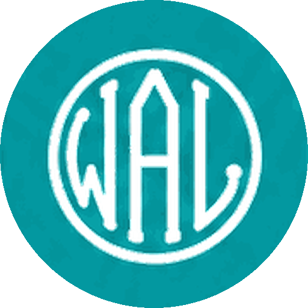
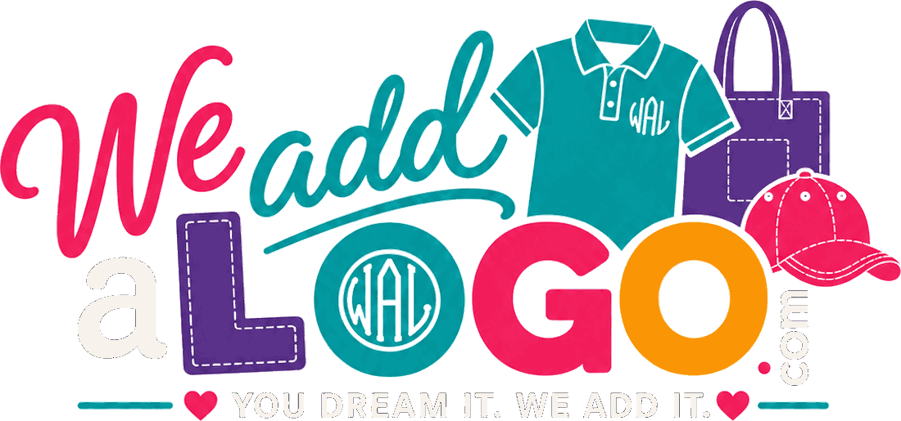
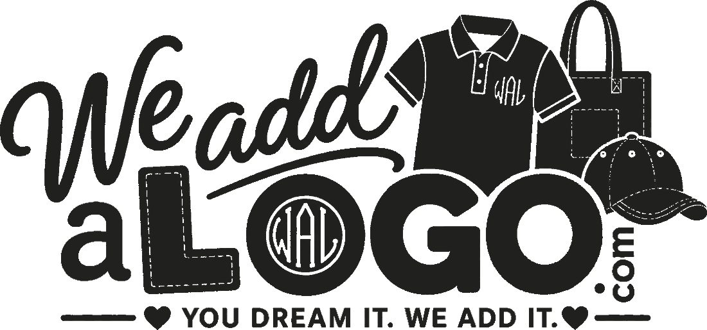

For Cindey · WeAddALogo
I'm not a graphic designer by any means. But while I was building the site I kept running into places where your logo had to work and couldn't quite — so I put together a few directions in case any of them appeal to you.
Your logo is genuinely good, and none of this is about replacing it. What it doesn't have is a small mark — one simple shape for a cap, a left chest, a profile picture. So I drew some, all of them made of stitches.
Where you are today
You know your trade far better than I know mine here — especially on the stitching side. These are just the spots where I hit a wall building the website.
The hand-lettered “We add” is the whole personality of it, and the shirt, tote and cap say what you do before anyone reads a word. The colors are cheerful and they're yours — nobody in Leeds looks like this. Every idea below keeps that. None of them ask you to start over.
The lowercase a and the whole “You dream it. We add it.” line are black, so on a charcoal shirt, a dark social post or a black tote they vanish. It reads as “We add LOGO”.

Facebook, Instagram and the little browser-tab icon are all square or round. A logo this wide shrinks to a smudge in them. Your website is currently using a thread emoji as its tab icon, because there was nothing better to use.
There are four slightly different pinks inside the logo file, three teals and two purples. On screen nobody notices. In thread, vinyl or print, where a color has to be picked exactly once, it's a problem — and you'd know that better than I would.
Five thread colors, dashed stitch detail and a tagline in small caps. At left-chest size that's asking a lot of a needle — you'd know exactly how much. This is the one that led to everything below: a mark that stitches in one or two colors, for the places the full logo can't go.
The thinking
Your logo is a picture — hand lettering with a shirt, a tote and a cap in it. Pictures are wonderful big: a sign, a banner, the top of your website. What you don't have is a mark — one small, simple shape that still reads on a cap, a left chest, a profile picture or a browser tab.
So every idea below is a mark, and every one of them is drawn as stitches, because that's what you actually do. They're meant to sit alongside your hand-lettered name, not replace it.
A W drawn as one continuous run of satin stitch, with the needle marks left visible. Simple enough to read at the size of a browser tab, and it looks like it came off your machine rather than off a computer.
One shape, one thread color if you want it. This is the one I'd put on a cap.
The same W with a filled circle behind it, which is what a profile picture wants — it fills the whole frame instead of floating in it. The ring of dashes is a row of stitches.
An embroidery hoop is the one object everybody pictures when they think of what you do. Used as a frame, it says “stitched here” before anyone reads a word — and it's a shape nobody else in town is using.
Teal hoop, pink W. Two colors, and the hoop shape does the explaining for you.
The same hoop in a single color, so it stitches in one thread on any garment color — and it's the version that works embossed, printed in black, or on a rubber stamp.
If you'd rather keep the monogram idea you already use inside the O of your logo, this is that — all three letters, drawn in the same stitch style so it finally matches the rest.
Wider than the single W, so it's better on a shirt back or a sign than on a cap — but it keeps the initials you're already using.
A shape aimed squarely at the jobs you already do a lot of — teams, schools, spirit wear. The dashed edge is the chenille border you'd see on a letterman patch.
Recolors to whatever a team wears. The same shape with a different letter inside becomes a product you can sell, not just a logo.
The friendliest of the bunch, and the most literal. Good on packaging, a sticker or a shop sign — less good very small, because of the thread tail.
Not a mark at all — just a way of finishing the name. Your logo already has a teal swash under “add”; this turns that into a deliberate running stitch that can sit under the name anywhere it appears.
Shown in a plain typeface here — your hand-lettered name would be used instead. This is only about the stitch underneath it.
How a mark and your name would sit together on a sign, a van door or an email signature — the mark carries the small places, the full logo still does the big ones.
Whether you take a mark or not, these come with the job: your existing logo fixed for dark backgrounds, and a one-color version. They're the two files you've needed all along.



Same logo, with the a and the tagline in ivory so they survive a black shirt — plus a one-ink version for a single-color stitch-out, a stamp or a vinyl decal.
Colors
Not new colors — your colors, each pinned to a single value so the logo, the website, a printed shirt and a thread chart all agree. These are the ones your website already uses.
#E52157#009090#F09000#5A3289#20201E#F7F3ECWhat it would cost
What it isn't: I'm not a trained designer, and I'm not pretending to be. If you want a full rebrand by someone who does this for a living, I'd tell you so and help you find them. This is a tidy-up of what you already have, done by the person who already has all your files.
About a week from the day you pick a direction. Nothing is charged until you've seen the first drafts and said you're happy.
And if you like your logo as it is, say so and we'll leave it. You will not hurt my feelings.
Your picks
Or nothing at all. Saving something here doesn't commit you to anything.
Nothing saved yet — tap ♡ Save on any idea above.
Your picks are kept in this browser only, so you can come back to them. They reach me when you press Send.